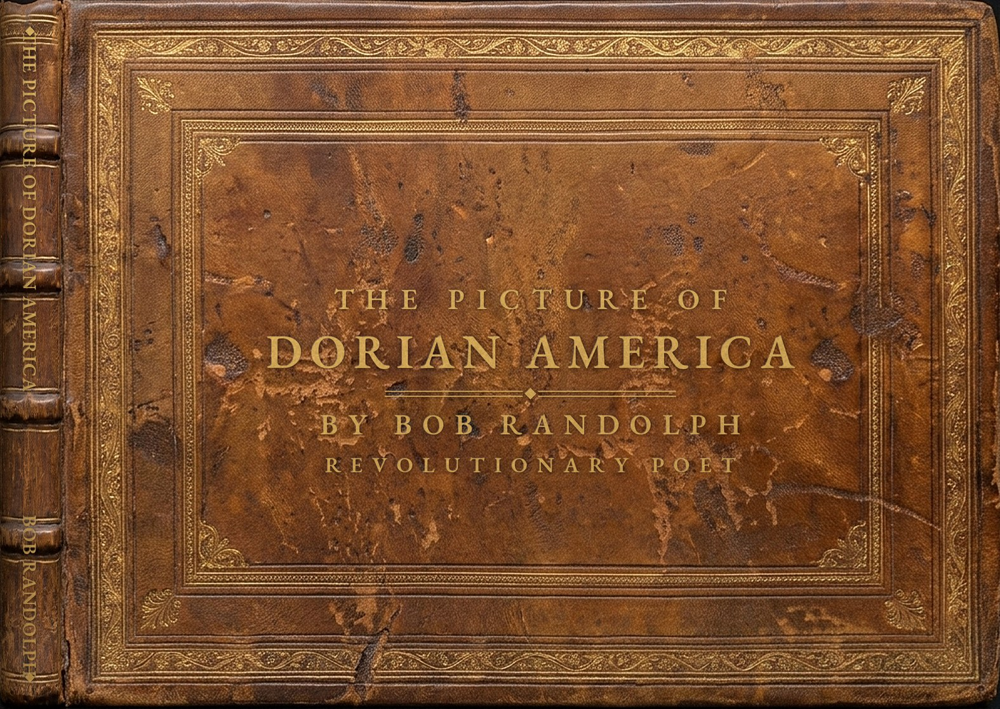
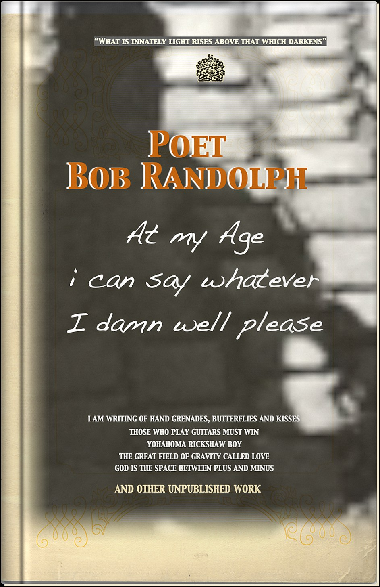

The Picture of Dorian America by Bob Randolph, Revolutionary Poet
Unpublished work of Bob Randolph Curated by Mark WottonThe Picture of Dorian America
The Picture of Dorian America grew out of a two-year collaboration (2008–2009) between Bob and Mark Wotton, with their mutual friend Harold Murphree, who went through thousands of Bob's documentary photographs to choose the images. The book was meant to represent Bob's best work, and to Bob “best” meant the fiercely raw political exposés of dirty wars and capitalism. The two of them worked in constant, productive tension, because the book also had to hold what Mark saw just as clearly: the beauty of Bob's prose on nature, everyday life and the universe. Weaving all of that into a book that still carried his revolutionary poetry at full strength was the feat. The book was drafted under Bob's own imprint, Randolph House Press, as a fully edited, print-ready manuscript that was never released in his lifetime. A print-on-demand edition, with its own ISBN so it enters library and bookstore catalogs the way a traditionally published book would, will finally give it a first real publication. That, along with the rest of his work, is what this archive exists to do.
For Harold, the book was a swan song. Bob consciously supported him in his last months, and Harold died unexpectedly. The book is dedicated to his memory.
Bob considered The Picture of Dorian America his seminal work, which is where the book gets its title, an echo of Oscar Wilde's The Picture of Dorian Gray. In Wilde's novel the worldly voice at Dorian's ear is Lord Henry Wotton, and the editor who carried Bob's book forward is Mark Wotton. Mark can't vouch for any family connection, but nobody planned the echo.
Unpublished Work of Bob Randolph
This second book is curated by Mark Wotton. Its cover lists I AM WRITING OF HAND GRENADES, BUTTERFLIES AND KISSES, THOSE WHO PLAY GUITARS MUST WIN, YOKOHAMA RICKSHAW BOY, THE GREAT FIELD OF GRAVITY CALLED LOVE and GOD IS THE SPACE BETWEEN PLUS AND MINUS, “and other unpublished work.” Its pages will be added as the chapbooks are catalogued.
More books will be added here as the chapbooks are catalogued.